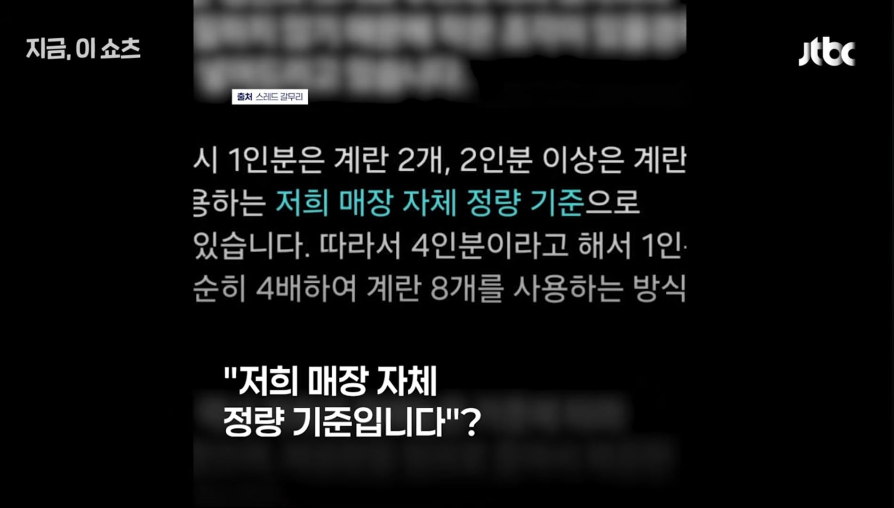
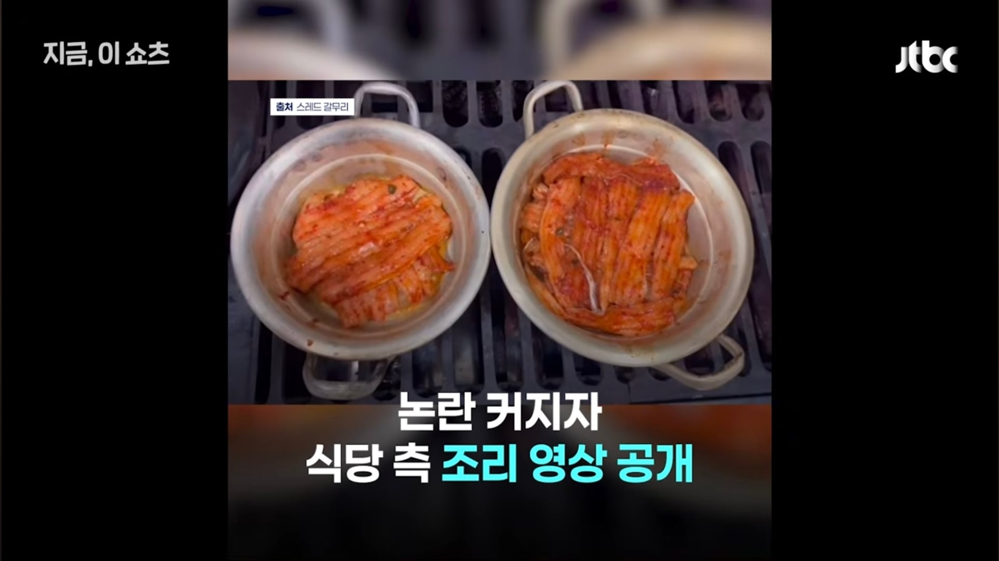
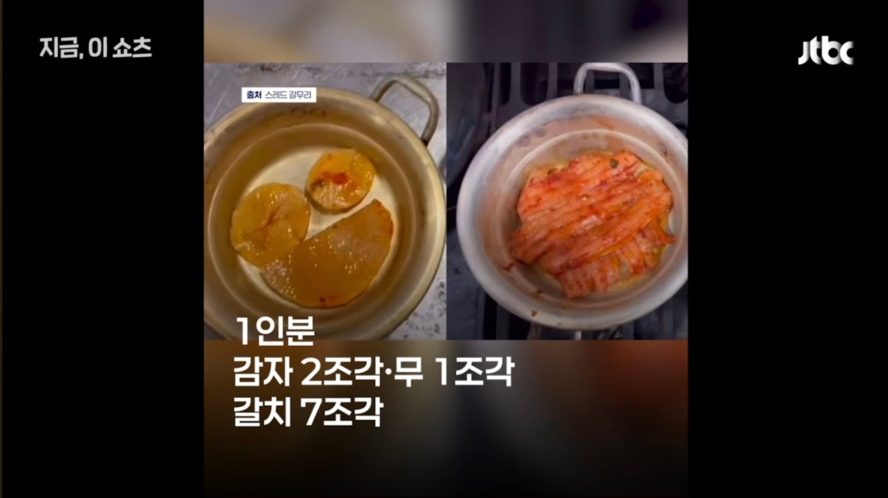
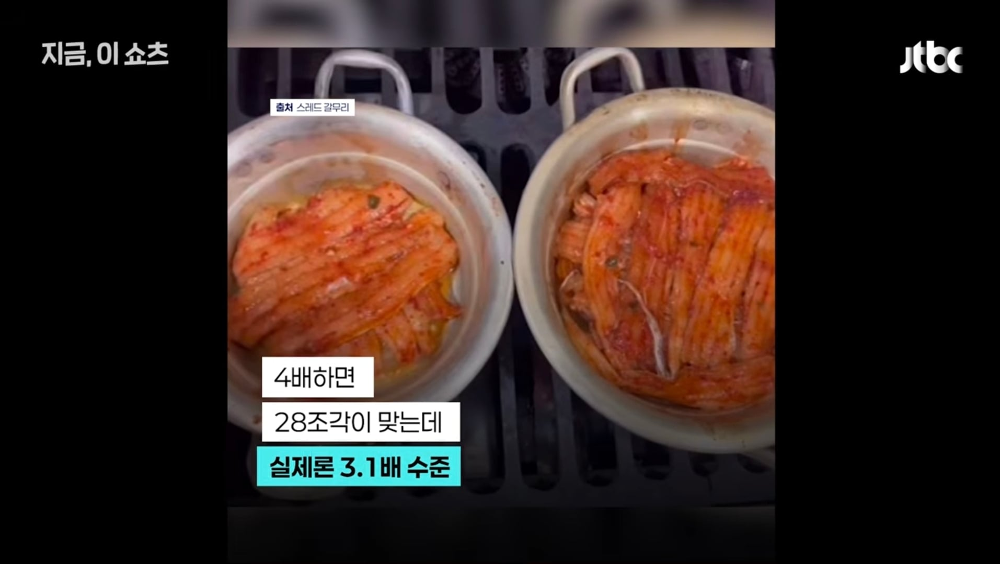
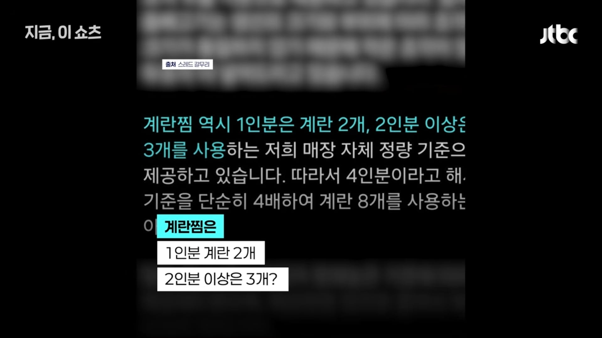
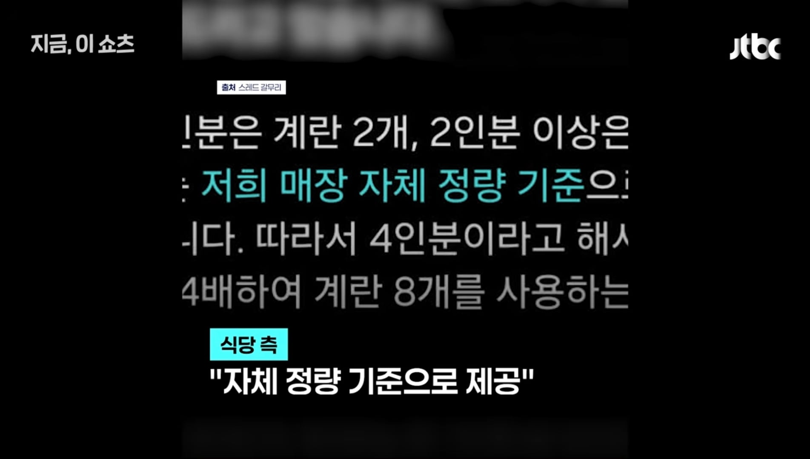
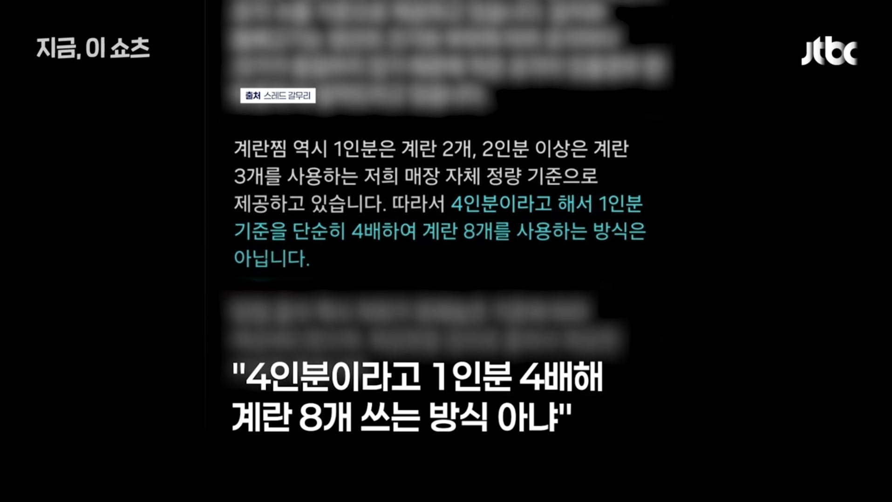
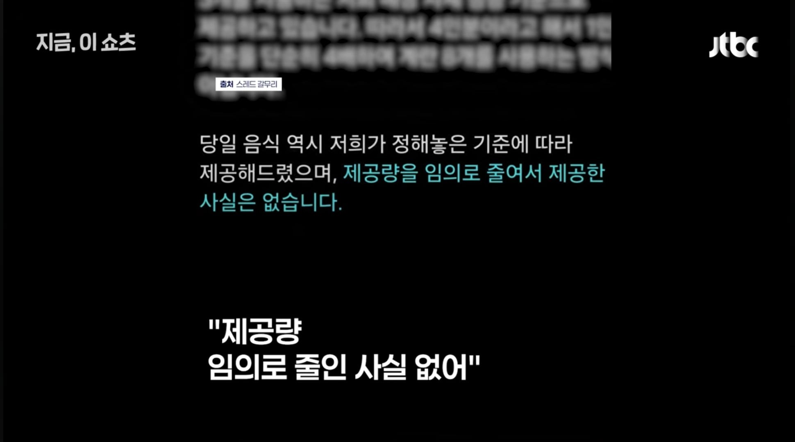
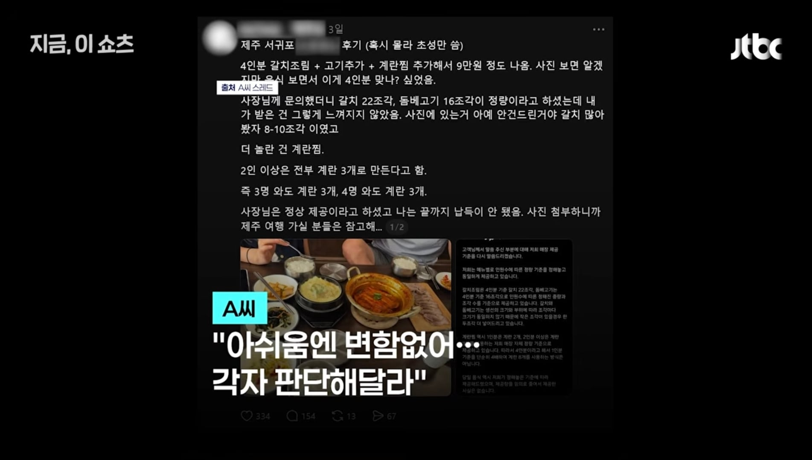
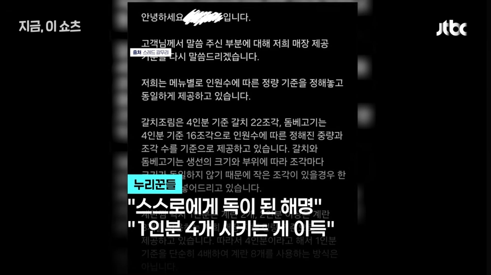
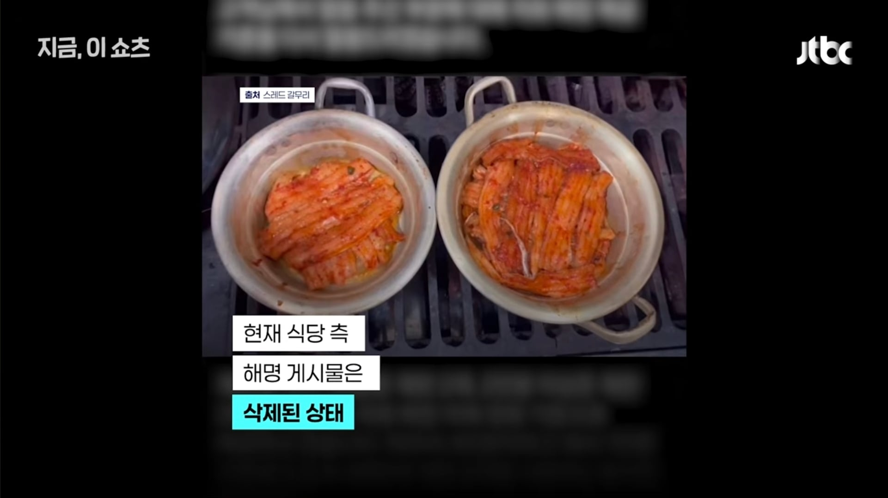
씨발 사장님놈아 장난해요?











씨발 사장님놈아 장난해요?
육회 2인분 시켰을 때 딱 저런 적 있었음
누가 봐도 1인분 양이라 한 접시 더 나오냐고 물어보니까
다 나온 거라고 하더라고 그래서 지금 1인분 더 주문할 테니
썰어서 가져와 달라고 했더니, 그제서야 주문 잘못 들어갔다고 하면서 한 접시 더 가져다줌.
진짜 양 가지고 장난치는 씹새들 널림
미친놈들인가 ㅋㅋㅋ 그럼 소중대로 구분해서 팔던가
더줘야 맞지 미친놈들인가
고깃집 사장들은 병신이라서 인분수대로 곱해서 줬냐?
3인분이라 해도 작어
그냥 실수였다 미안하다로 끝내는게 그리 어렵나
사실 3인분이 나간게 맞다 죄송합니다 하고 4인분 제대로 있는 척 하는게 좋은? 해명이긴 해
앞으로 식당도 정량 재료 얼마나 들어가는지 다 공개해야겠네
저런곳 존나 많음. 4명이가서 4인분이 한꺼번에 나오는 종류의 음식들 시키면 저럼. 특히 전골같은거 1인분x4 의 양 절대 안나옴. 그래서 가능하면 2인분씩 다른메뉴 시킴. 전골 2인분+조림2인분 이런식으로. 좀 양심적으로 살면 안되나
저걸 변명이라고 하나? 저런 사람들도 분식집 가서 라면 4인분 시켰는데 3개 끓여서 나눠 나오고 가격은 그대로 4배면 화내겠지? 진짜 세상엔 어마무시한 사람들이 너무 많네..
여기 또 사과하기 vs. 망하기에서 후자를 선택하는 자영업자가..
저기 가서 1인분씩 시켜서 먹으면 따뜻하면서 많이 먹을 수 있겠는데 장사 잘되겠다
보통은 조리시간이나 손 가는거때문에
가격은 4인분 = 1인분 *4
양은 4인분 > 1인분 * 4
아님? ㅋㅋㅋㅋㅋㅋ
맞짘ㅋㅋㅋㅋ 설겆이 각조리안해되는 이득때문에 더 퍼줘야 정상인데 ㅋㅋㅋ
저래놓고 망하면 경제잘못 나라잘못
지 잘못은 절대없는 분
후달리면 쎗바닥이 길어지는법
자기사업장인데 자기맘대로하는거고
손님도 가든말든 손님맘대로하는거지
근대 1인분4인분 이라면 1X4생각하지 1X3.1생각안하자나
그럼사기아님? 3.1 하고 4하고 구분되는숫자인데 왜 지맘대로 숫자를 정확하게안적음?
본인도 이상하니까 글 지운거겠지
차라리 말을 말지 병신ㅋㅋㅋ
다른 식당도 저럴거 같은 느낌인데 ㅋㅋㅋ
저 사장은 호텔 4일 결제하면 3일만 재워 줘라
찌개류만봐도 2인분이상하는거 n배로 안보이는게 보통이긴해
뭐든지 오래하면 매너리즘에빠짐
4인분 시키면 감사한게아니라
4개나 서비스해주는데 팁은 없나?
이게 인간본성인가